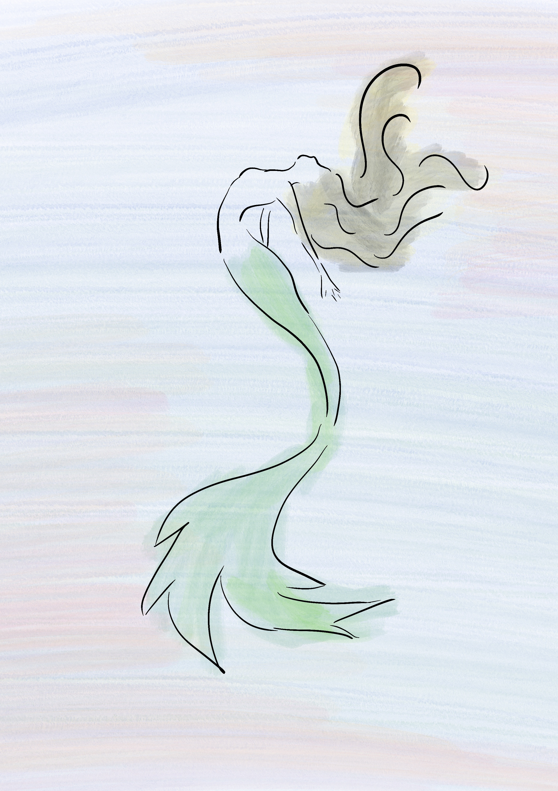

Iara: a lenda
Curiosidades
A lenda de Iara ultrapassou o universo do folclore tradicional e passou a fazer parte ativa da cultura popular e das produções midiáticas. Sua presença pode ser encontrada em diferentes formas de expressão artística, o que demonstra a força e o fascínio duradouro que essa personagem exerce.
Embora muitas versões da lenda contem que os homens atraídos por seu canto acabam se afogando ou desaparecendo, há também narrativas em que o desfecho é diferente: alguns não morrem, mas permanecem encantados ao lado dela, vivendo para sempre nas profundezas das águas.
Iara é frequentemente retratada em poemas, contos e romances, inspirando autores que exploram sua beleza, mistério e dualidade como figura encantadora e perigosa.
A personagem já foi adaptada para filmes, novelas e séries, tanto em retratações fiéis ao mito original quanto em versões modernas, que reinterpretam sua história sob novas perspectivas.Essas múltiplas representações ajudam a manter o mito de Iara vivo, renovando seu significado e garantindo sua presença na imaginação coletiva, especialmente entre as novas gerações

Imagem autoral criada para aula DSG1863